A RUA COMO MÉTODO
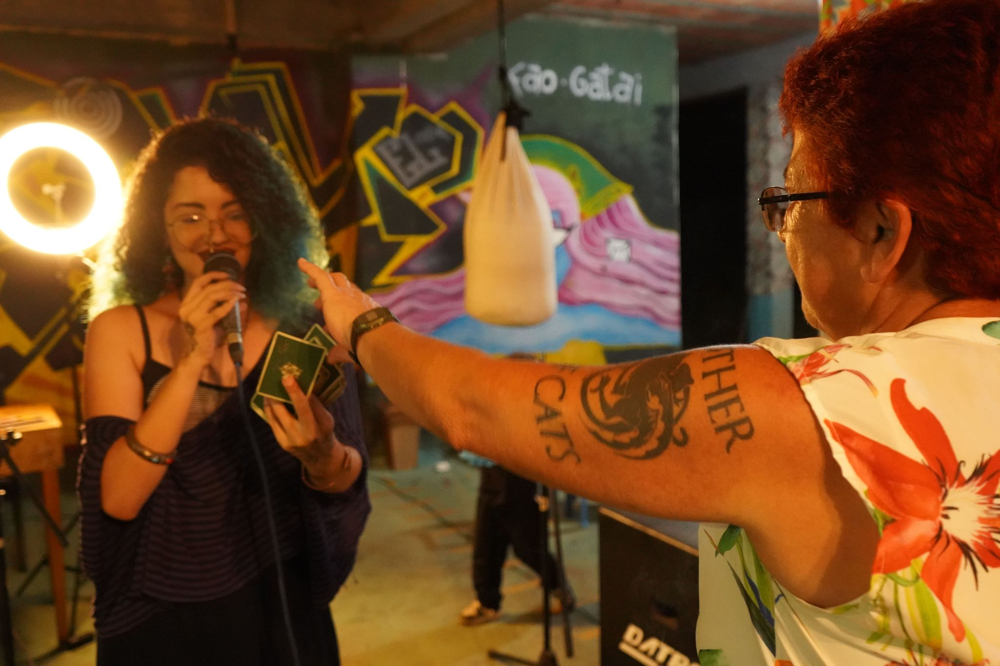
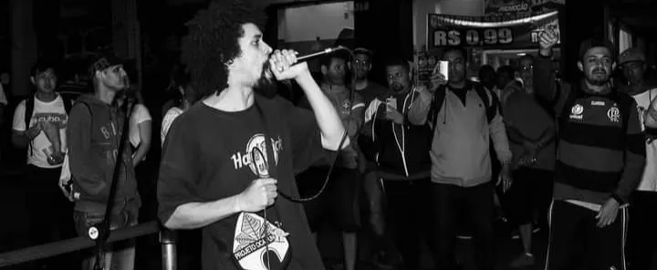
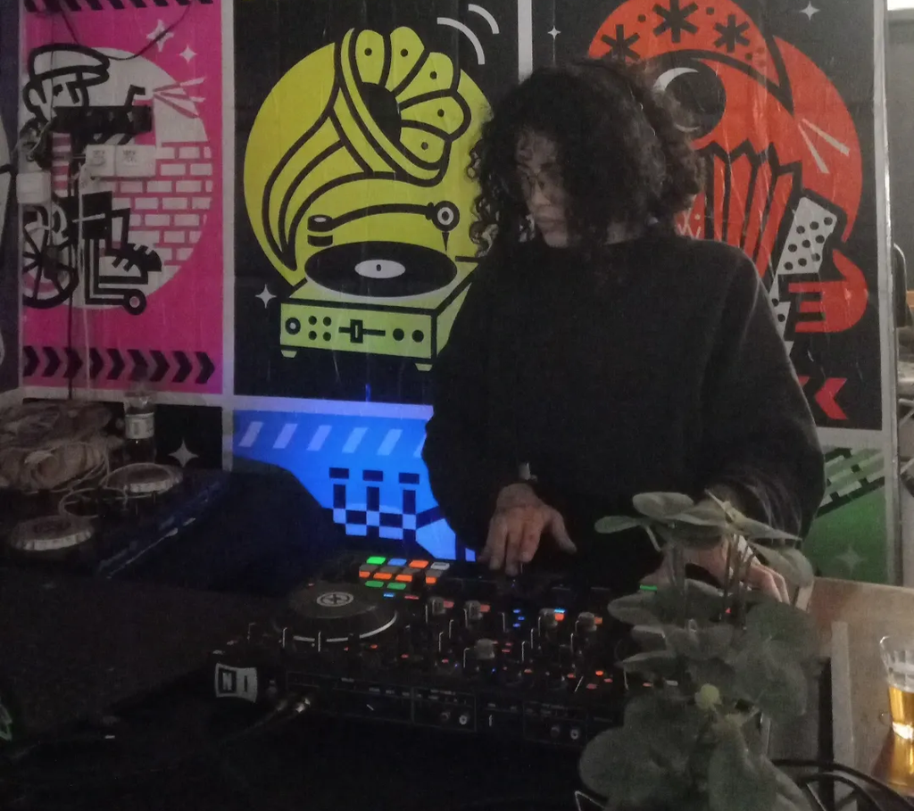
"A rua não é apenas referência estética, mas origem, método e território de criação."
"Suas apresentações funcionam como ocupações artísticas, onde som, palavra, corpo e presença constroem atmosferas intensas, imersivas e impactantes."
"Cada aparição do projeto é pensada como um acontecimento, capaz de transformar o espaço e a percepção do público."
"No Cálice, não há hierarquia entre participantes: cada elemento, cada linguagem, cada presença é parte viva do rito coletivo."
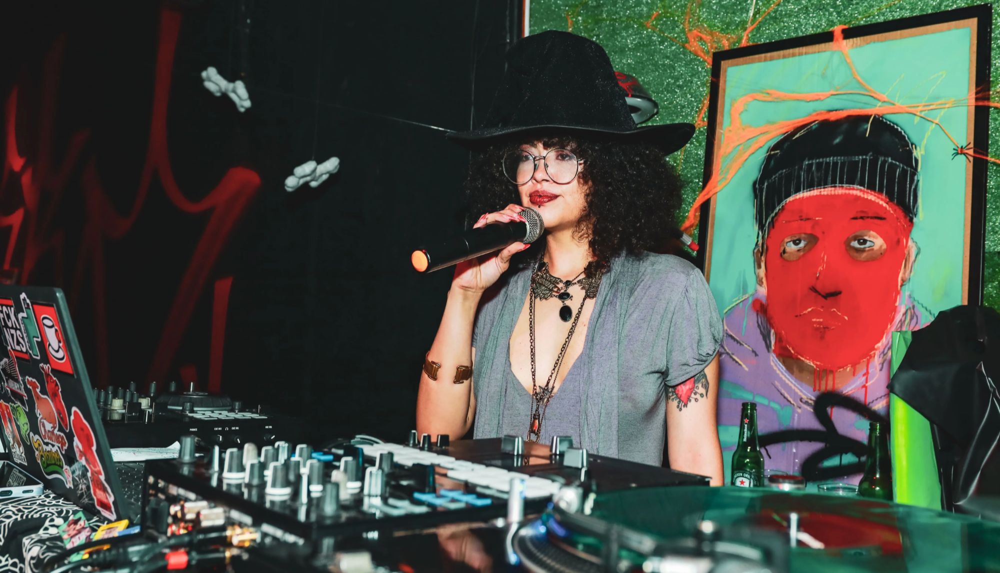
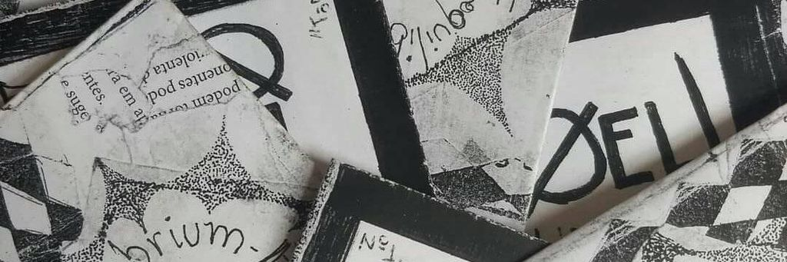
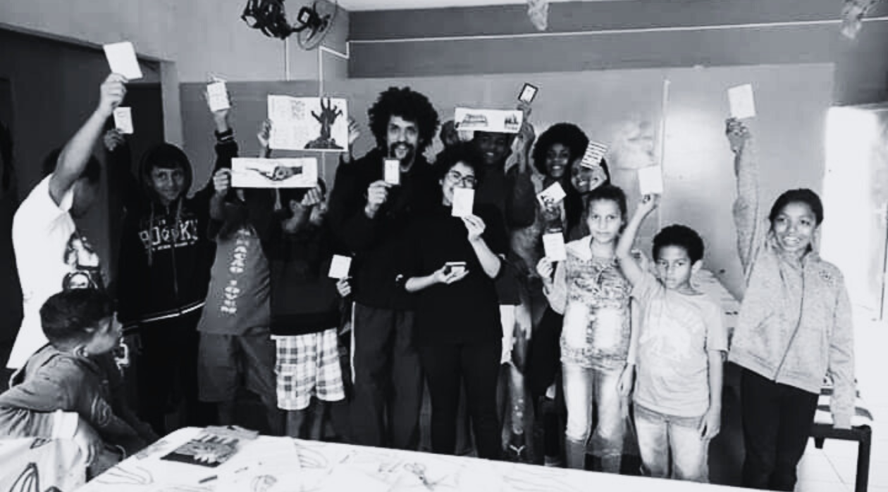
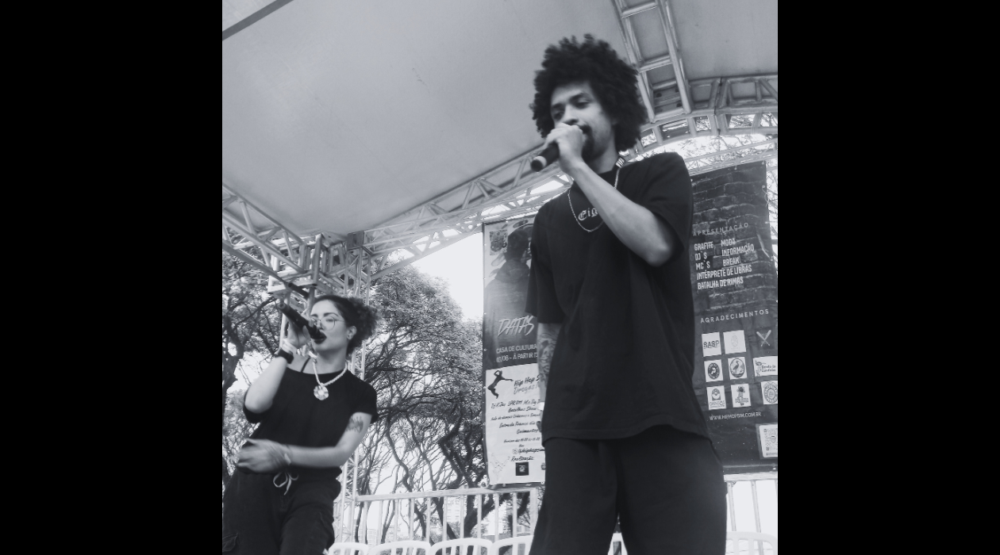
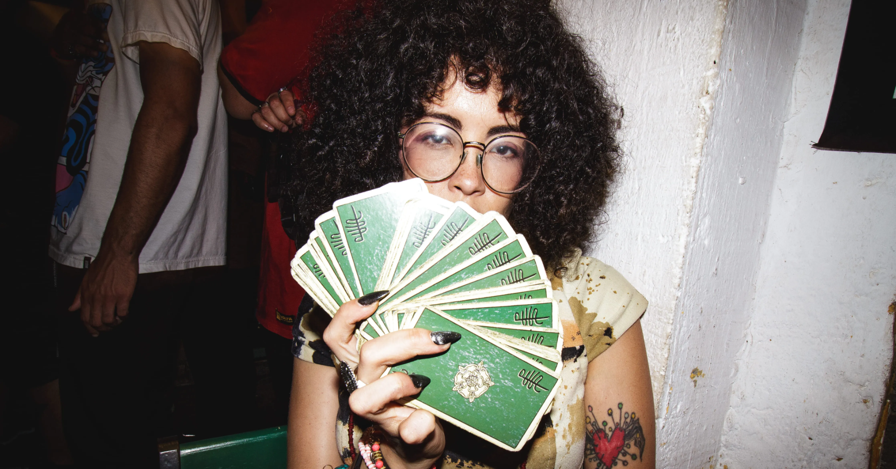
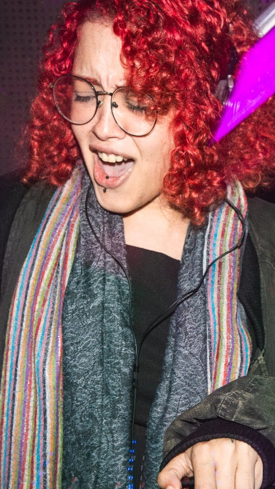
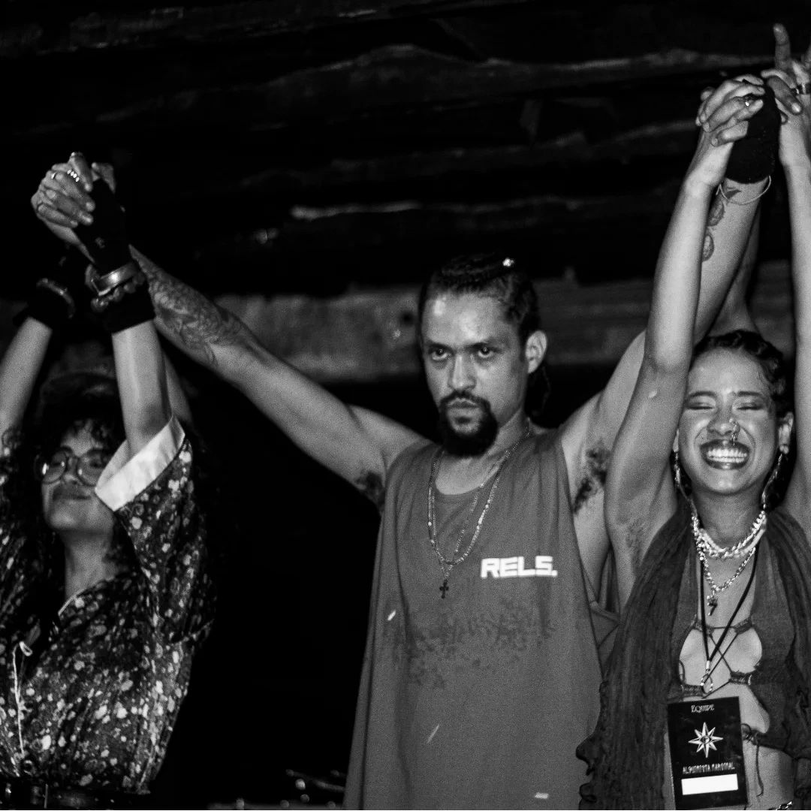
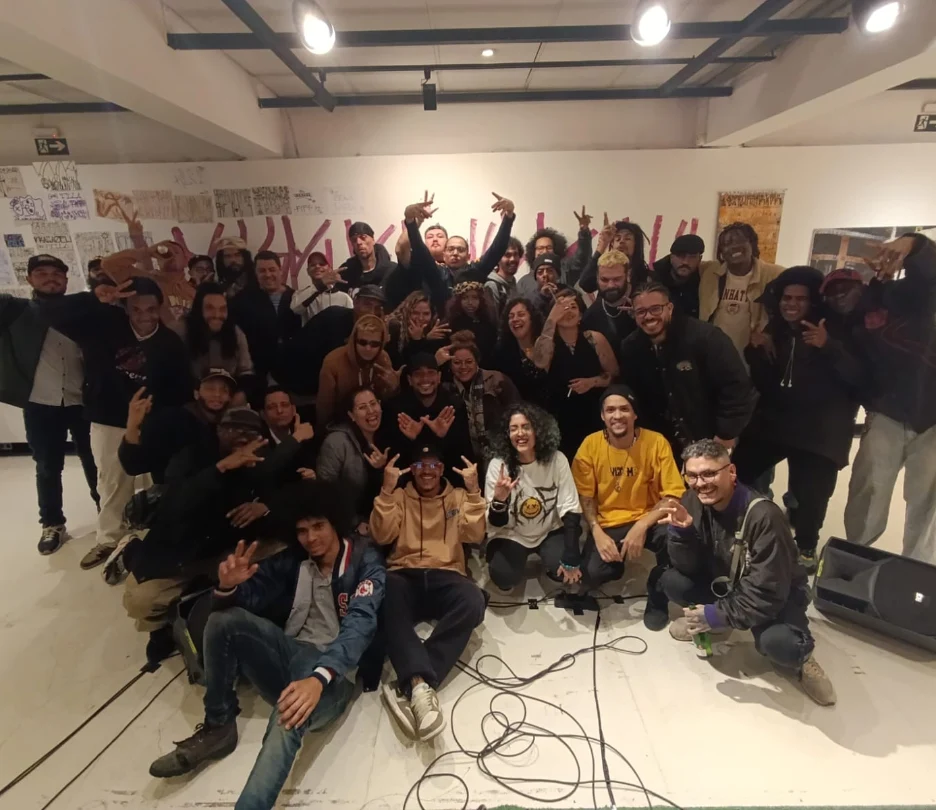
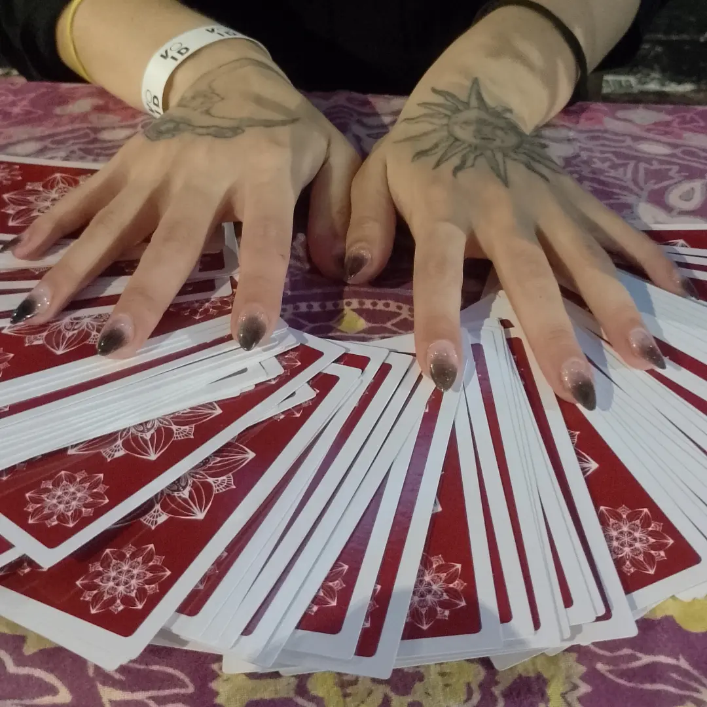